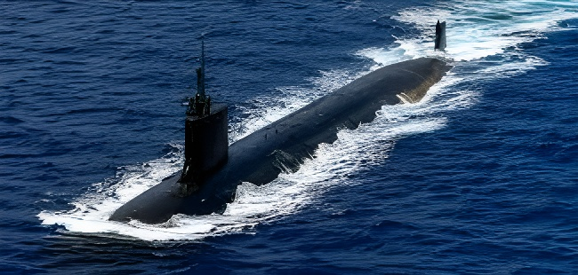

Après une année marquée par un examen du Pentagone sur le pilier sous-marin d'AUKUS et par des changements de dirigeants dans les trois pays partenaires, les États-Unis, le Royaume-Uni et l'Australie ont multiplié en août 2026 les gestes de réaffirmation de leur coopération militaire trilatérale. Confirmation d'un accès pérenne pour les sous-marins américains à la base de HMAS Stirling, signature d'un accord sur les radars entre Londres et Canberra, finalisation du site du futur chantier naval de Henderson : ces annonces interviennent alors qu'une commission d'enquête parlementaire australienne et d'anciens dirigeants continuent de questionner l'avenir du pacte.
Le pilier sous-marin d'AUKUS a traversé une période d'incertitude marquée, au cours de l'année écoulée, par un examen commandé par le Pentagone sur la faisabilité du transfert de sous-marins nucléaires d'attaque de classe Virginia à l'Australie. Cette revue avait suscité une inquiétude réelle à Canberra comme à Londres, tant elle mettait en cause la capacité industrielle américaine à construire suffisamment de coques pour honorer à la fois les besoins de l'US Navy et l'engagement pris envers l'Australie. Dans le même temps, les trois pays partenaires ont connu des changements de gouvernement ou de direction qui ont nourri les spéculations sur une possible remise en cause du pacte.
En avril 2026, Sir Stephen Lovegrove, représentant spécial du Premier ministre britannique pour AUKUS, a affirmé publiquement que ce chapitre d'incertitude était désormais clos, les trois nations ayant chacune mené leur propre examen avant de confirmer leur engagement lors d'une réunion ministérielle en novembre 2025. Cette clarification a ouvert la voie à une série de réaffirmations concrètes tout au long de l'année 2026, jusqu'à la révision du calendrier d'acquisition annoncée fin mai.
Le 4 août 2026, le chef d'état-major de la défense australienne, l'amiral Mark Hammond, a confirmé que les sous-marins d'attaque américains conserveraient un accès pérenne à la base de HMAS Stirling, en Australie-Occidentale, dans le cadre de la Submarine Rotational Force-West (SRF-West), levant l'ambiguïté née de propos antérieurs évoquant une limite stricte de cinq ans pour les rotations. Une semaine plus tard, le ministre britannique d'État à la Préparation et à l'Industrie de défense, Luke Pollard, s'est rendu à Canberra pour signer, aux côtés de son homologue australien Pat Conroy, un accord entre QinetiQ et CEA Technologies portant sur les radars à antenne active (AESA), avant de poursuivre sa tournée vers Perth et Auckland.
Le 24 août, lors d'une étape à Perth largement passée inaperçue dans la presse, Pollard a réaffirmé sur les réseaux sociaux que le Royaume-Uni restait « pleinement engagé » dans AUKUS, portant un message de soutien du nouveau Premier ministre travailliste Andy Burnham, arrivé à Downing Street après la démission de Keir Starmer en juin. Trois jours plus tard, les gouvernements fédéral et d'Australie-Occidentale ont dévoilé le plan définitif du site retenu pour le chantier du Henderson Defence Precinct, destiné à l'entretien des futurs sous-marins.
« Il y avait l'an dernier une spéculation publique considérable sur l'orientation future d'AUKUS ; je veux dire clairement que cette période est aujourd'hui close. »
— Sir Stephen Lovegrove, représentant spécial du Royaume-Uni pour AUKUS, avril 2026« Le Royaume-Uni reste engagé envers AUKUS : nous y sommes pleinement. »
— Luke Pollard, ministre d'État britannique à la Défense, 24 août 2026Ces réaffirmations officielles n'ont pas dissipé toutes les critiques. Une commission d'enquête publique australienne sur AUKUS, présidée par l'ancien ministre de l'Environnement Peter Garrett, a entendu début août l'ancien Premier ministre Malcolm Turnbull, qui a jugé que le Parlement australien restait le moins informé des trois assemblées concernées — aux côtés du Congrès américain et du Parlement britannique — au regard de l'ampleur de l'engagement financier consenti. Tout en se disant favorable à l'alliance avec Washington, Turnbull a estimé que celle-ci ne devait pas se faire au détriment de la souveraineté australienne, dans un monde où la fiabilité des États-Unis lui paraît moins acquise que par le passé.
Ce climat de scrutin accru s'ajoute aux doutes déjà exprimés par des figures comme l'ancien Premier ministre travailliste Paul Keating, pour qui le programme représente un pari industriel risqué. Du côté britannique, la capacité de construction reste également questionnée : Londres doit encore livrer deux sous-marins de classe Astute et quatre sous-marins lanceurs d'engins de classe Dreadnought avant de pouvoir consacrer des capacités de chantier au premier SSN-AUKUS, dont la livraison demeure prévue au mieux dans plus d'une décennie.
Annonce du partenariat AUKUS entre l'Australie, le Royaume-Uni et les États-Unis.
Dévoilement de « l'Optimal Pathway », la feuille de route détaillée du pilier sous-marin.
Le Pentagone lance un examen du pilier I d'AUKUS, suscitant de l'inquiétude à Canberra et à Londres.
Réunion ministérielle à Singapour : réaffirmation de l'engagement et révision du plan d'acquisition (3 Virginia d'occasion) ; lancement du premier projet-signature du pilier II.
L'amiral Mark Hammond confirme l'accès pérenne des sous-marins américains à HMAS Stirling.
Signature à Canberra d'un accord de coopération radar entre QinetiQ et CEA Technologies.
Visite de Luke Pollard à Perth ; finalisation du plan du site du chantier de Henderson.
| Site / poste | Montant | Emplois |
|---|---|---|
| HMAS Stirling (WA) | 8 Md$A | — |
| Henderson Defence Precinct (WA) | 12 Md$A | 10 000+ |
| Chantier sous-marin (Australie-Méridionale) | 3,9 Md$A | 10 000+ |
| Sites nucléaires britanniques | — | 3 000+ depuis 2024 |
| Chaîne SSN-AUKUS (Royaume-Uni) | — | 7 000+ attendus |
Le mois d'août 2026 illustre une convergence délibérée des trois gouvernements pour afficher la solidité d'AUKUS après une période de turbulences politiques et d'examens internes. Mais cette unité de façade ne résout pas la contrainte la plus concrète du pacte : la capacité des chantiers navals américains et britanniques à produire suffisamment de sous-marins, dans les délais annoncés, pour honorer à la fois leurs propres besoins et leurs engagements envers l'Australie. L'avenir d'AUKUS dépendra donc moins, dans les prochaines années, de déclarations politiques que de la production industrielle réelle de coques — un facteur que ni les ministres ni les communiqués communs ne peuvent, à eux seuls, accélérer.
After a year marked by a Pentagon review of AUKUS's submarine pillar and by leadership changes in all three partner nations, the United States, the United Kingdom and Australia multiplied gestures of reaffirmation of their trilateral military cooperation throughout August 2026. Confirmation of enduring access for US submarines at HMAS Stirling, a radar cooperation agreement signed between London and Canberra, and the finalisation of the future Henderson shipyard site: these announcements come as an Australian parliamentary inquiry and former leaders continue to question the pact's future.
AUKUS's submarine pillar went through a genuine period of uncertainty over the past year, as the Pentagon ordered a review of the feasibility of transferring Virginia-class nuclear-powered attack submarines to Australia. The review raised real concern in both Canberra and London, since it questioned whether US shipyards could build enough hulls to meet both the Navy's own needs and the commitment made to Australia. At the same time, all three partner nations underwent changes in government or leadership that fuelled speculation about a possible rethink of the pact.
In April 2026, Sir Stephen Lovegrove, the UK prime minister's special representative on AUKUS, publicly stated that this chapter of uncertainty was now closed, noting that all three nations had each conducted their own review before confirming their commitment at a ministerial meeting in November 2025. That clarification opened the way to a series of concrete reaffirmations throughout 2026, culminating in the revised acquisition timeline announced in late May.
On 4 August 2026, Australia's Chief of the Defence Force, Admiral Mark Hammond, confirmed that US attack submarines would retain enduring access to HMAS Stirling naval base in Western Australia under Submarine Rotational Force-West (SRF-West), resolving ambiguity created by earlier statements suggesting a strict five-year limit on rotations. A week later, UK Minister of State for Defence Readiness and Industry Luke Pollard travelled to Canberra to sign, alongside his Australian counterpart Pat Conroy, an agreement between QinetiQ and CEA Technologies on Active Electronically Scanned Array (AESA) radar technology, before continuing his tour to Perth and Auckland.
On 24 August, during a largely unnoticed stop in Perth, Pollard reaffirmed on social media that the United Kingdom remained "fully" committed to AUKUS, carrying a message of support from newly installed Labour Prime Minister Andy Burnham, who took office at Downing Street after Keir Starmer's resignation in June. Three days later, the federal and Western Australian governments unveiled the final site layout for the Henderson Defence Precinct shipyard, intended for future submarine sustainment.
"There was considerable and public speculation about the future direction of AUKUS last year, and I want to be clear now that has been unequivocally put to bed."
— Sir Stephen Lovegrove, UK special representative on AUKUS, April 2026"The United Kingdom remains committed to AUKUS – we are all in on AUKUS."
— Luke Pollard, UK Minister of State for Defence, 24 August 2026These official reaffirmations have not silenced all criticism. An Australian public inquiry into AUKUS, chaired by former environment minister Peter Garrett, heard evidence in early August from former Prime Minister Malcolm Turnbull, who argued that the Australian Parliament remained the least informed of the three legislatures involved — alongside the US Congress and the UK Parliament — given the scale of the financial commitment involved. While describing himself as a strong supporter of the US alliance, Turnbull argued it should not come at the expense of Australian sovereignty, in a world where he considers US reliability less assured than in the past.
This heightened scrutiny echoes doubts already voiced by figures such as former Labor Prime Minister Paul Keating, who has described the programme as a risky industrial gamble. On the British side, shipbuilding capacity is also being questioned: London still has to deliver two Astute-class submarines and four Dreadnought-class ballistic missile submarines before it can dedicate yard capacity to the first SSN-AUKUS boat, whose delivery remains, at best, more than a decade away.
The AUKUS partnership is announced between Australia, the United Kingdom and the United States.
The "Optimal Pathway", the detailed roadmap for the submarine pillar, is unveiled.
The Pentagon launches a review of AUKUS Pillar I, raising concern in Canberra and London.
Ministerial meeting in Singapore: commitment reaffirmed and acquisition plan revised (3 second-hand Virginias); first Pillar II signature project launched.
Admiral Mark Hammond confirms enduring access for US submarines at HMAS Stirling.
A radar cooperation agreement is signed in Canberra between QinetiQ and CEA Technologies.
Luke Pollard visits Perth; the Henderson shipyard site layout is finalised.
| Site / item | Amount | Jobs |
|---|---|---|
| HMAS Stirling (WA) | A$8bn | — |
| Henderson Defence Precinct (WA) | A$12bn | 10,000+ |
| Submarine shipyard (South Australia) | A$3.9bn | 10,000+ |
| UK nuclear sites | — | 3,000+ since 2024 |
| SSN-AUKUS supply chain (UK) | — | 7,000+ expected |
August 2026 shows a deliberate convergence by all three governments to display AUKUS's solidity after a period of political turbulence and internal reviews. But this display of unity does not resolve the pact's most concrete constraint: whether American and British shipyards can build enough submarines, on schedule, to meet both their own needs and their commitments to Australia. AUKUS's future will therefore depend, in the coming years, less on political statements than on actual industrial output of hulls — a factor that neither ministers nor joint communiqués can, by themselves, accelerate.